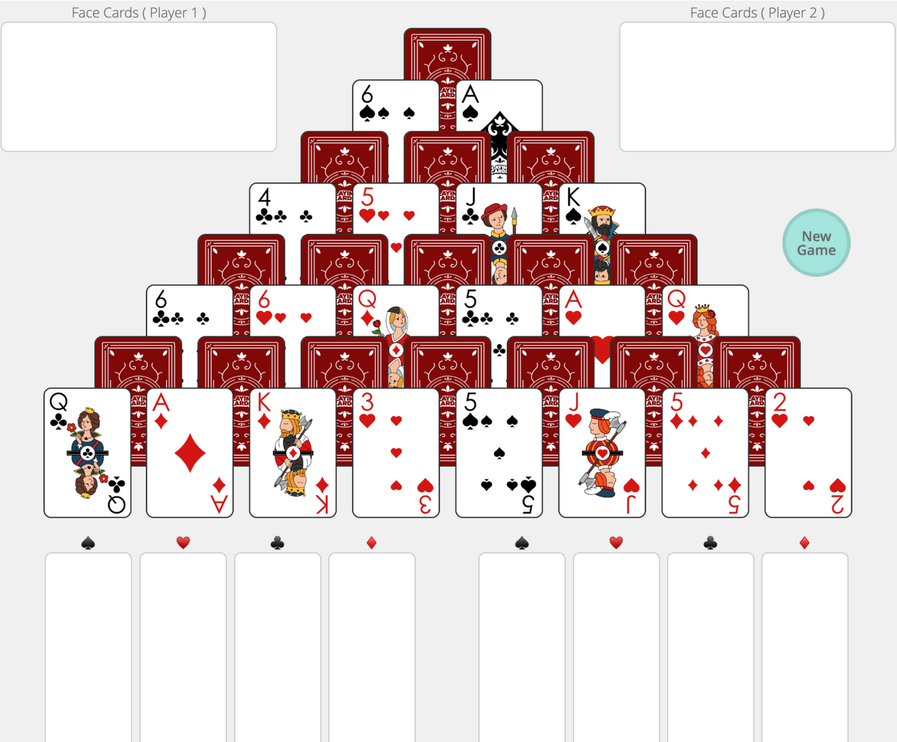

Duel
A 2-player card game inspired by 7 Wonders Duel. Can be played online.

Setup
Use a standard deck with 7s, 8s, 9s, 10s, and Jokers removed. Shuffle the remaining 36 cards. Arrange them in a pyramid structure, alternating face-up and face-down per row.
Gameplay
Take turns to pick up 2 cards, except for the first player's initial turn (only 1 card).
- A card can only be taken when fully uncovered.
- If a face-down card is exposed, flip it immediately.
- All picked cards must be placed publicly for both players to see.
Victory Conditions
- Have 3 more face cards than the opponent.
- Collect four of a kind (excluding J/Q/K).
- Form a straight flush (A-2-3-4-5 or 2-3-4-5-6).
Tiebreaker
- The player with more face cards wins.
- If still tied, the Ace of Spades wins.